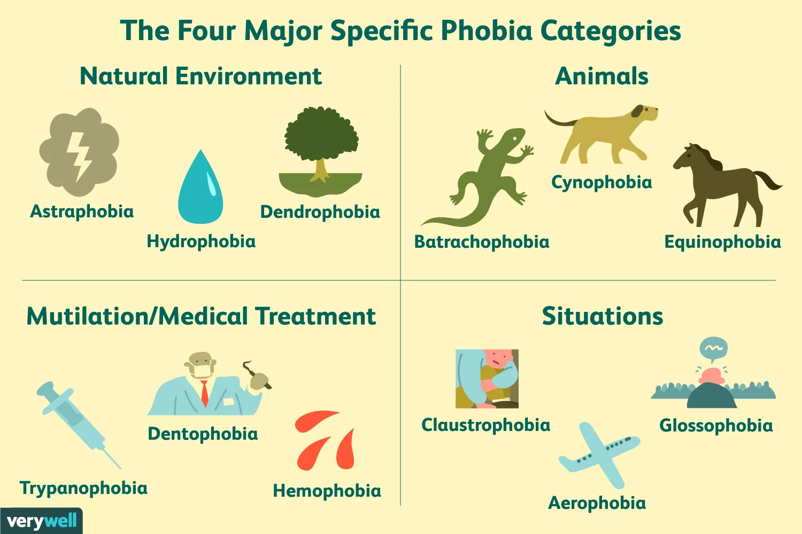

Anxiety disorder is when feelings of stress, fear, uneaseness and dread, which is categorized to be anxiety, continue for longer periods. Anxiety could appear to anyone, for example, someone could have a sudden feeling of stress or fear, before taking a test, or feel overwhelmed after getting loads of work or homeworks.
Anxiety disorder is when feelings of stress, fear, uneasiness, and dread, which is categorized to be anxiety, continue for longer periods. Anxiety could appear in anyone, for example, someone could have a sudden feeling of stress or fear before taking a test, or feel overwhelmed after getting loads of work or homework. As you could see on the graph, panic attacks have four different stages that circle around. 1: body sensations, is a stage where the person get an unusual body senations, like heart beats at a fast rate, which makes you think that something bad is going to happen. 2: panic attack, this stage is where the person reacts to the triggers ultimately leading to a full panic attacks. 3: high anxiety, after the panic attack, the person will feel very anxious and sensitized. 4: Fear, after having high anxiety, it leads the person to feel anxious about having another panic attack, leading to your body to have more unsual bodily sensations.
Phobias are a type of anxiety where a person may feel fearful of an object, person, pattern, animal, place, activity, or activities. There are many types of phobias, some famous types include Bacteriophobia, which is a fear of bacterias, Acrophobia, which is fear of heights, or Trypophobia, which is fear of clustered holes, bumps, or irregular patterns. These phobias could be caused after having persistent fear that is excessive and unreasonable for an object, though some studies have suggested that phobias could be caused because of genetics, and the environment that the person has lived in. For example, if someone is Aquaphobia, the person may have drowned when a child. Some symptoms of phobias beings triggered include, rapid or high and fast heartbeats, shortness in breathing.
What exactly causes anxiety is unknown, due to different people having different triggers than others. According to the National Liberary of Medicine, some factors like, brain biology, genetics, stress and change in brain, which could be affected by puberty, or aging and changes in social environment, for example, moving to a different country, going to a new school etc. Are what many researchers suspect what anxiety is caused by. Anxiety triggers differently with people. Just like the anxiety type, phobias, people have different fears towards different things.

Behavioral symptoms of anxiety include , feeling of panic, dread and uneasiness, irritable, uncontrollable, obsessive thoughts, some examples of obsessive thoughts include suicidal thoughts, or self-harm, or harm to others.
Physical symptoms include restlessness, heart palpitations, which is a feeling of wrong amounts of heart beats, commonly faster heartbeatings, Shortness of breath, muscle tension, nausea, numbness, or difficulty sleeping. According to the Substance Abuse and Mental Health Service Admition (SAMHSA) these effects are also shown in caffeine and alcohol.
Inequality that people with any type of anxiety disorder experience are catagorizing anxiety and anxiety disorder as the same, eventhough it is a completely different thing. These facts are the reasons why anxiety and anxiety disorder are different. Anxiety is a short term feeling of stress, fear, uneasiness etc. Though anxiety disorder is a long term feeling of stress, fear or uneasiness. Anxiety disorder could lead to obsessive thoughts like suicidal thoughts, or self-harm and or harm towards others. Also since anxiety is a shorter term, it is much harder to develope suicidal thoughts, or self-harm. Due to less understanding of the difference between anxiety and anxiety disorder, it could lead to statements like "Oh, I get anxiety as well! you will be okay" or "Anxiety comes when I'm about to take a test, you will be fine" as you could see in these statements, they are seen to deny the fact that the person with anxiety disorder is not feeling okay. By doing this, many people feel less supported by others, and feel like they are not understood.
Inequality that people with anxiety disorder could face is categorization of anxiety and anxiety disorders to be the same. The solution to this inequality is to educate people on the difference between anxiety and anxiety disorder. Some ways to educate more students about the difference could include, more focus on mental illness units, or social media campaigns. And by educating people with further information, more people will be aware of anxiety disorders and the harm to the person, or others it could cause.It could lead to fewer rate of suicides, which is about 14% among all ages in america, at 2023 according to Centers for Disease Control and Prevention(CDC).